Pick the visit. It opens on its own preparation screen, where you enter the patient's name.
First consult · about 60 min
End of the 12-week Foundation
12-week program · PCOS, PMS, endo
Walk-in · about 15 min · no NP
15–25 min · intake booked later
Up to ~60 min · intake can be same day
Already had the intro · full medical intake